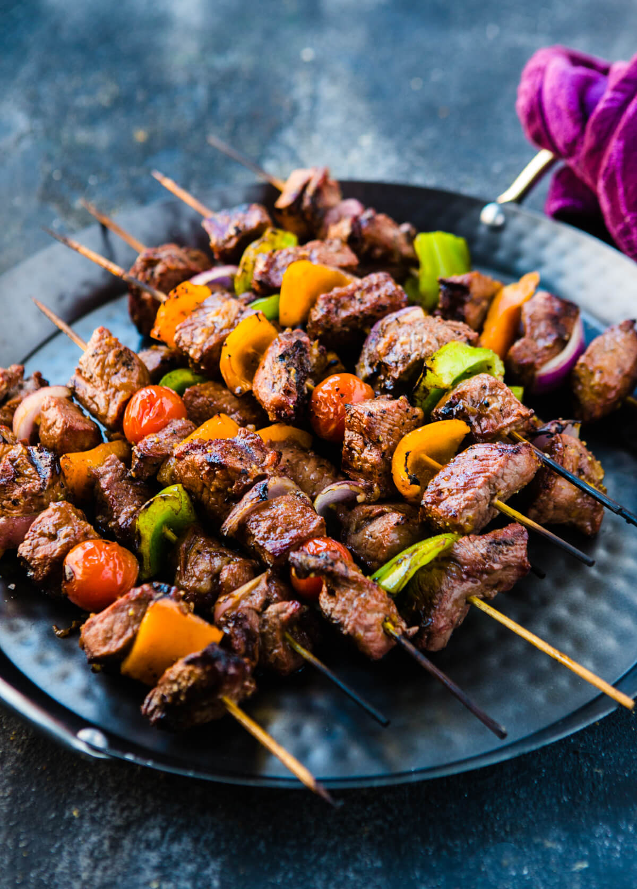

Shish Kabobs Recipe

Description
This recipe is highly customizable, this will just explain how I create this dish when I want it.
You can add any ingredients that you want if you think it would be good on the grill in combination with
the other ingredients on the stick, is up to you!
Ingredients
- Chicken
- Peppers
- Small potatos
- Olive oil
- Skewers
- Spices (Optional)
Steps
- Marinate chicken over night in marinade of your choice.
- Cut the chicken into small pieces.
- Cut each potato in half and place them in the microwave for 5 minutes to soften them.
- Pour a bit of olive oil into a bowl with the potatos, as well as spices of your choice. Mix it all together.
- Put chicken, potatos, and peppers on skewer in any order you please.
- Turn on grill.
- Place the shish kabobs on the grill until they are cooked.
- Enjoy!
Return Home